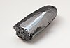

ruthenium

Definition: Ruthenium is a chemical element with the symbol Ru and atomic number 44. It is a rare transition metal belonging to the platinum group of the periodic table. Like the other metals of the platinum group, ruthenium is inert to most other chemicals. Russian-born scientist of Baltic-German ancestry Karl Ernst Claus discovered the element in 1844 at Kazan State University and named ruthenium in honor of Russia. Ruthenium is usually found as a minor component of platinum ores; the annual production has risen from about 19 tonnes in 2009 to some 35.5 tonnes in 2017. Most ruthenium produced is used in wear-resistant electrical contacts and thick-film resistors. A minor application for ruthenium is in platinum alloys and as a chemistry catalyst. A new application of ruthenium is as the capping layer for extreme ultraviolet photomasks. Ruthenium is generally found in ores with the other platinum group metals in the Ural Mountains and in North and South America. Small but commercially important quantities are also found in pentlandite extracted from Sudbury, Ontario and in pyroxenite deposits in South Africa.
Source: Wikipedia
Wikipedia Page (Something wrong with this association? Let us know.)
Wikidata Page (Something wrong with this association? Let us know.)